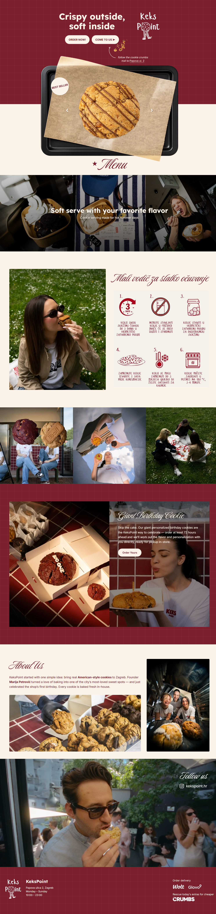

A playful cookie-bakery landing page with hand-drawn branding, built to move visitors straight from the homepage to ordering.
Visit site ↗Summary
Keks Point is a cookie-bakery landing page with hand-drawn branding and a bright, sugary palette that carries the shop's in-person personality onto the screen, with every section pointed at one action — ordering.
Behind the storefront sits a small owner-facing admin dashboard, so the menu and the homepage's featured picks can change without touching code.
Tech Stack
Details
/admin route before it reaches the dashboardLearning Experience
The interesting problem wasn't the storefront — it was designing an admin surface simple enough for a non-technical bakery owner to run daily, without a database server to provision or a CMS to configure.
Vercel KV plus Blob turned out to be the right amount of infrastructure: enough to persist menu edits and images safely, light enough to stay invisible to the person actually using it.